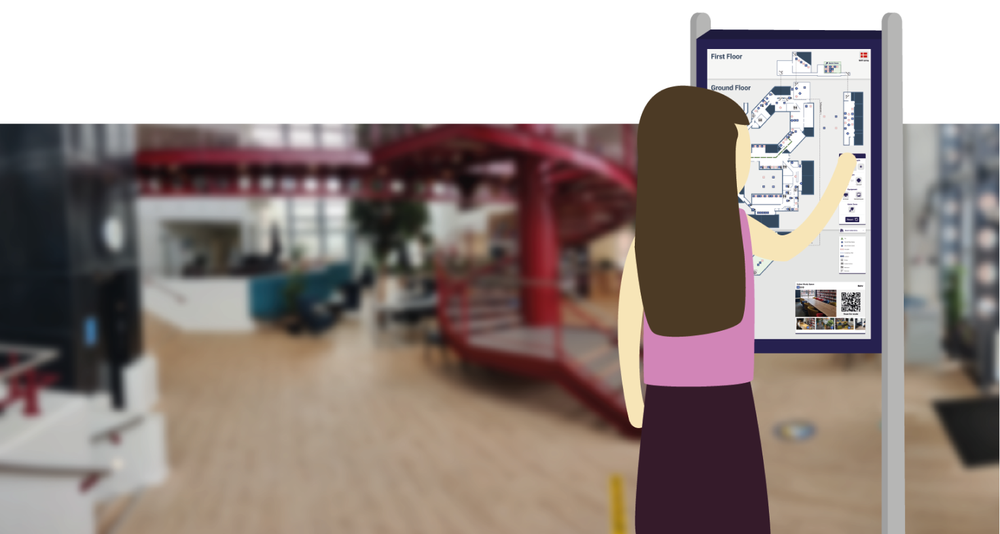

Bachelor's Thesis
The right space at the right time
Designing an interactive map for locating study spaces at Aalborg University Library.
Library on the move
In the spring of 2021, Aalborg University Library was in the process of moving their main department from one building to another, more centrally located within the AAU campus. With this move, they sought to become more than a repository of knowledge, but also a communal space for people to work together and socialize in a number of different ways. They came to us with the proposal of creating a system which could facilitate this transformation, and simultaneously introduce students to the library in its new form. Together with four other students, this served as the subject of our bachelor’s thesis. Over the course of four months, we created an interface mapping all available study spaces in the new library building, with a filtering system to let each visitor find exactly the space which fit them best. My role in this design process was in gaining a deep understanding of the problem and potential users, ideating and prototyping possible solutions, evaluating them against our own requirements, as well as with students and other stakeholders, and documenting the process in our project report.